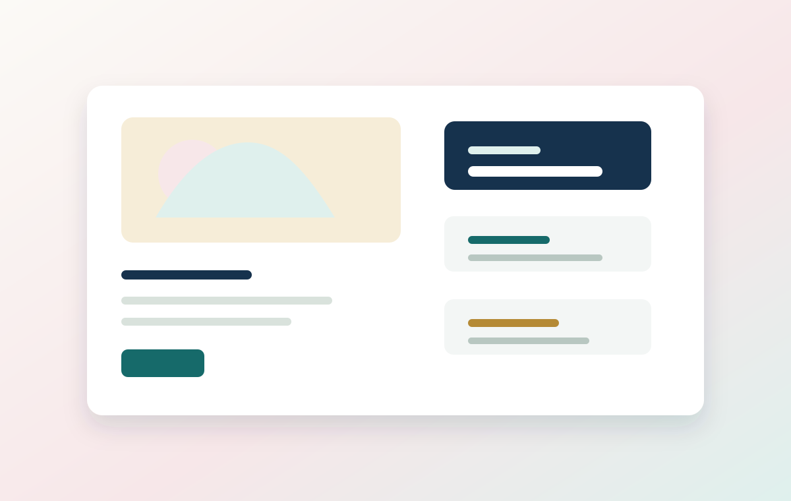
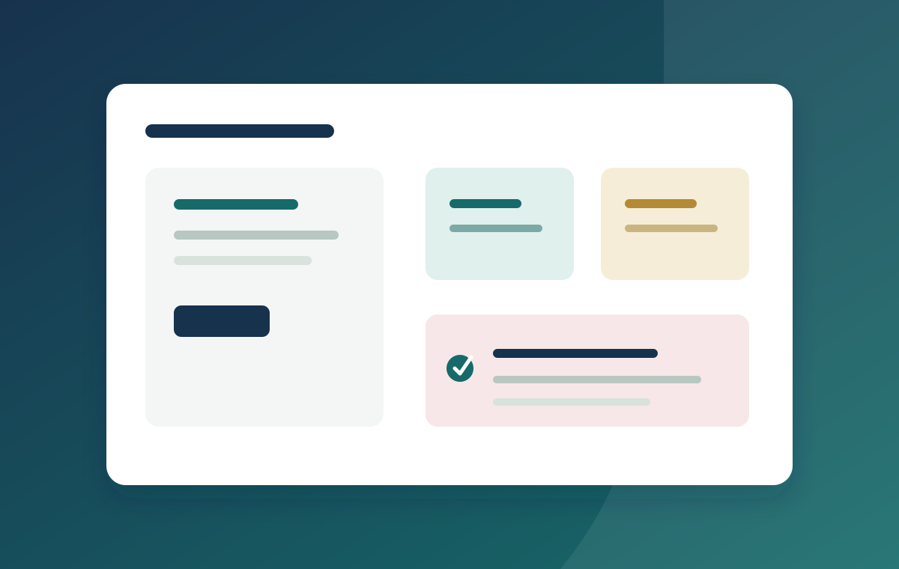
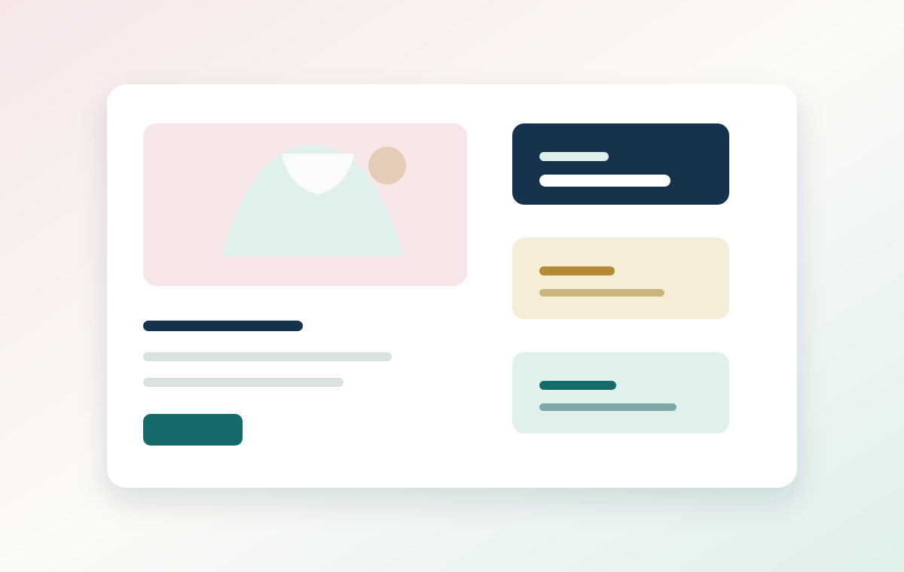
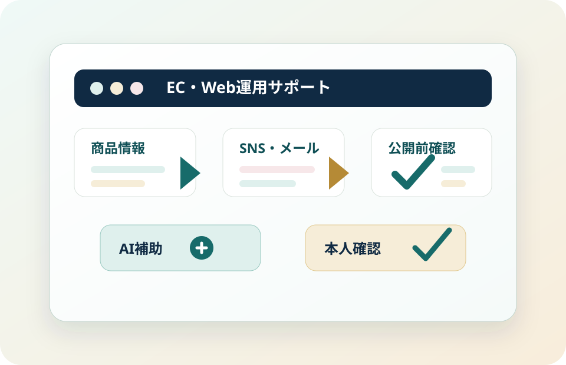

経験の土台
顧客対応、正確な入力、問い合わせ内容の整理、メール文面作成を経験してきました。相手の状況を確認し、必要な情報を抜け漏れなく整理して、後工程の人が判断しやすい形に整えることを大切にしています。
顧客対応、正確な入力、問い合わせ内容の整理、メール文面作成を経験してきました。相手の状況を確認し、必要な情報を抜け漏れなく整理して、後工程の人が判断しやすい形に整えることを大切にしています。
Canva/Figma相当のバナー・投稿案制作、HTML/CSSでの静的ページ整理、AIによる案出し・比較・チェックリスト化を組み合わせ、EC運営・Web更新・SNS投稿・広報補助を正確に支えます。
見るべき制作物: Case 01「京こもの日和」
商品詳細、商品登録シート、SNS投稿、問い合わせ返信、EC更新チェックに加え、バナー6枚・メルマガ/LINE文面3本を確認できます。
和雑貨ECケースを見る見るべき制作物: Case 02「HibiNote Biz」
営業支援資料、FAQ、受注管理、Webお知らせに加え、日次報告・リモート業務管理表・導入後フォローメールまで、在宅でも進める整理力を見せます。
IT営業支援ケースを見る見るべき制作物: Case 03「plus closet」
ファッションECのLP、商品ページ改善、バナー、配信文、数値集計、販促カレンダー、公開前チェックを確認できます。
ファッションECケースを見る

Case 02
小規模チーム向けタスク管理SaaS。日次報告・リモート業務管理表・導入後フォローメールを追加し、営業支援・Web広報・受注管理・リモート報連相を資料化しています。


案出し、比較、チェックリスト作成にAIを使い、最終確認は自分で行う方針を説明しています。
AI活用レポートを見る3ケース共通で確認する誤字脱字、リンク、価格、在庫、スマホ表示などをまとめています。
チェックリストを見る採用担当が5分で見る場合の順番と、業務別に確認する制作物を整理しています。
概要1枚を見る